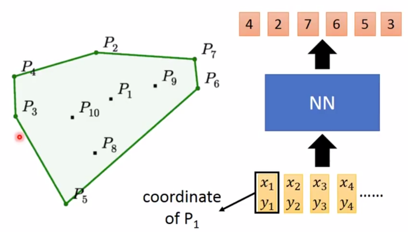
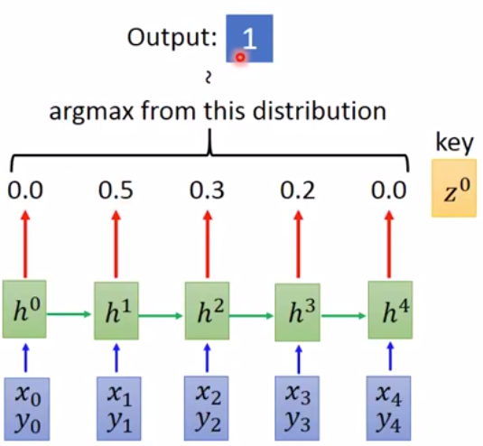
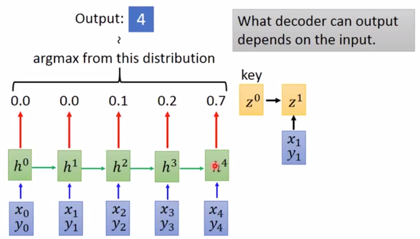
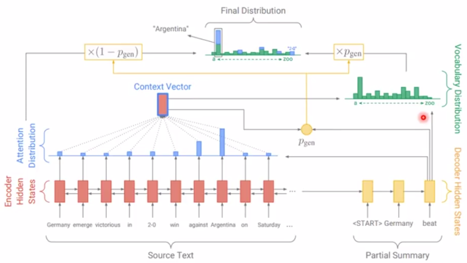
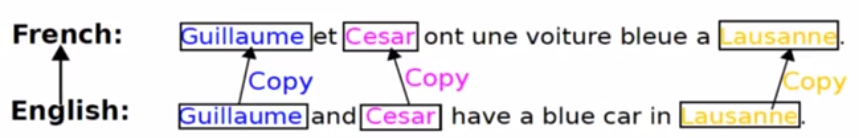
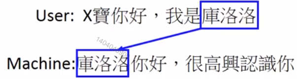

1. 背景
假设有这样一个闭包问题,要求输入所有的点,输出这组点的闭包点的顺时针序列.

这是一个Seq2Seq问题,但是用普通的Seq2Seq模型来做,存在这样一个问题.decoder部分是根据概率从一个集合中sample一个点作为输出.在这个问题中,集合就是输入的点集.但输入的点集是不是确定的,可能是50个点,也可能是100个点.因此无法训练decoder.
2. 模型
解决方法:
在attention上做一些改进,让network动态地决定输出的set有多大.
具体方法为:去掉decoder,直接基于attention的结果作为输出.


3. 应用
Summarization，相当于取出原文中的重要的词
原文中有些没见过的人名, 地名,在普通的Seq2Seq模型中无法处理这些人名地名. PointerNetwork可以直接从原文中抽取重要的词组成句子.

在网络中同时存在Seq2Seq attention和Pointer Network.并增加一个结点Pgen,用于决定这两条路的weight. 基于weight结合这两条路的结果.翻译
有些人名、地名不需要翻译，使用pointer Network机制从原文中拿出单词直接贴到output中

- Chat-Bot
直接从input中copy关键词放到output中
